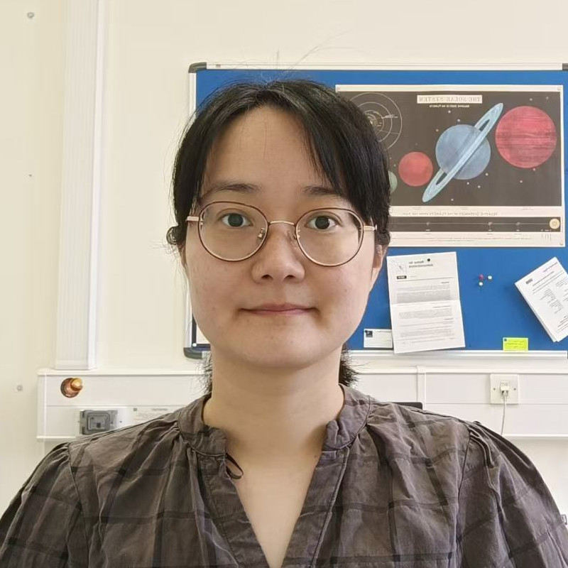

Shan-Shan Ding
I am an Assistant Professor at Fudan University. Before joining Fudan, I carried out postdoctoral research at several institutes in the UK, starting with a visiting researcher position at Imperial College London, followed by postdoctoral appointments at the EnFlo Lab (University of Surrey) and the University of Oxford. My independent research focus on rough-wall turbulent boundary layers over non-uniform wall conditions and the energetics of large-scale flow structures in rotating thermal turbulence, with applications to atmospheric boundary layers, geophysical and astrophysical flows, respectively. I provide peer-review services for a range of international journals in fluid dynamics.
One Ph.D. position in fluid mechanics is available this year.
Applications for postdoctoral positions are welcome at any time.
Please write to dingshanshan@fudan.edu.cn